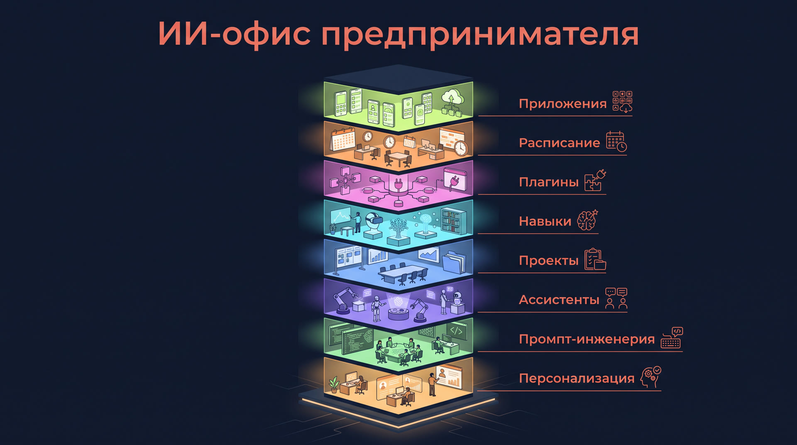
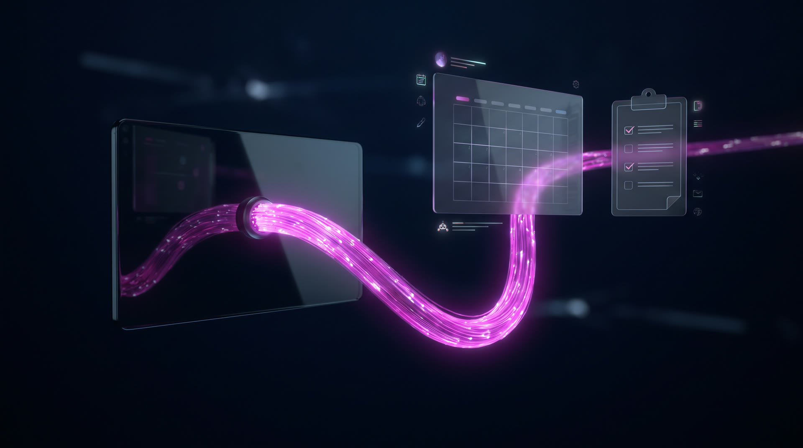

ИИ-офис
предпринимателя
за три часа

Альберт Валеев
Четыре вещи, которые останутся после встречи
Досье в настройках
ChatGPT знает ваш бизнес, клиентов и как с вами говорить. Каждый новый чат начинается не с нуля
Свой чистовик
Ваша задача, прогнанная через формулу и совет экспертов. Готовый текст, а не набросок
Свой ассистент
Роль под повторяющийся процесс: один вход, один выход, живёт в вашем ChatGPT
Свой проект
Кабинет с файлами и правилами, где все чаты по теме видят одно и то же
Восемь этажей, три режима

Одно правило безопасности, и дальше без оглядки
Выберите одну свою задачу. Она пройдёт через все этажи
Режим Чат
Экскурсия
и персонализация
Раньше десять вкладок. Теперь всё в одном окне
Чаты
Разговор с моделью. Здесь живёт промпт
Проекты
Кабинеты с файлами и правилами по теме
Мои GPT
Ваши ассистенты: роли под процессы
Навыки
Методики, которые вызываются в любом чате
Плагины
Выход в почту, календарь, диск и задачи
Запланированное
Задачи по расписанию, без вашего участия
Холст и приложения
Документы, калькуляторы и сайты внутри чата
Три режима
Чат отвечает, Работа делает многошаговое, Кодекс правит файлы
Два поля и память. Этого хватает, чтобы он вас узнал
Что ChatGPT должен знать о вас
Сюда ложится досье: кто вы, бизнес, клиенты, команда, что важно сейчас, что тормозит
Как отвечать
Сюда ложится инструкция качества: по делу, без воды, спросить, если данных не хватает
Восемь блоков интервью. Он спрашивает, вы отвечаете голосом
Кто я
Имя, бизнес, роль, сколько лет в деле
Мой день и неделя
Из чего состоит, когда встречи, когда тишина
Клиенты и команда
Кто покупает, кто рядом работает, кто партнёры
Что важно сейчас
Главная цель на квартал и почему именно она
Что повторяется
Задачи, которые я делаю каждую неделю руками
Что тормозит
Где теряю время, деньги и нервы
Как со мной говорить
Коротко или подробно, прямо или мягко
Чего не делать
Не советовать то, что уже не сработало
Досье в персонализацию. И проверка, что он вас понял
Инструкция качества: как отвечать
Досье это фундамент. Но не весь дом
Не проживёт ответы за вас
Досье это ваши слова о себе. Что вы не сказали, того он не знает и не угадает
Не заменит проект
Файлы, прайсы и договоры в персонализацию не влезут. Для них есть кабинет: этаж 4
Не заменит ассистента
Роль под повторяющийся процесс живёт отдельно и вызывается по имени: этаж 3
Промпт-
инженерия
Без ТЗ результат ХЗ. Одна задача, два запроса
Пять элементов, из которых собирается любой рабочий запрос
Шаблон лежит в шпаргалке. Вот он заполненный
Пятнадцать готовых промптов по формуле. Под задачи из вашего списка
Ответ на «дорого»
Разбор переписки и мой ход
Где я теряю сделку
Сводка по выгрузке
Таблица с фото
Протокол встречи
Досье на компанию
Сравнить кандидатов
Вопросы к интервью
Неприятное сообщение
Разбор документа
Регламент процесса
Как я звучу со стороны
Разгрести неделю
Разбор недели
Ваша задача по формуле
Пусть он спросит раньше, чем начнёт писать
Совет экспертов в пять ходов. Планёрка по вашему же ответу
Совет собирается
Четверо с разными взглядами спорят по вашему ответу. Согласие из вежливости запрещено
Кого не хватало
Добавляем роль, которой не было, и смотрим, как она меняет выводы
Разбор по фактам
Где слабо, где неправда, где я сам себя обманываю. Не смягчать
Проверка цифр
Отдельным сообщением: что подтверждается, что нужен источник, что выдумано
Чистовик
Готовый к отправке текст, чек-лист из пяти пунктов и что осталось на мне
Ход 1 и ход 3. Остальные копируются касанием
Одна работа, три читателя
Шесть сообщений подряд в том же чате
Первый ответ это всегда черновик. Двенадцать фраз докрутки
Понравилось чужое? Забираем целиком
Чужой образец в свой промпт
Не пишите промпт. Расскажите задачу голосом
Наговорите задачу и ничего не пишите
Ассистенты
Разовый промпт против сохранённого
Десять пар «вход, выход»
В инструкцию метод. В базу знаний данные
Кто он, шаги, какие вопросы задаёт при нехватке данных, формат результата, запреты, что проверяет человек
Прайсы, примеры работ, шаблоны, регламенты, частые вопросы, описания товаров, тексты договоров
Конструктор задаёт семь вопросов, и инструкция готова
Какой процесс повторяется и как часто
Что на входе: письмо, файл, таблица, запись
Что на выходе и в каком виде
Как вы делаете это сейчас и что в этом хорошо
Что чаще всего идёт не так
Какие данные ему нужны: прайс, примеры, регламент
Какой тон и что запрещено делать никогда
Инструкция до 8000 знаков плюс список «положить в базу знаний»
Собираем вашего ассистента до первого прогона
Три теста, и ему можно отдавать работу
Обычная задача
Ровно то, для чего он создан. Ответ должен совпасть с тем, как сделали бы вы, только быстрее
Сложная задача
Пограничный случай: злой клиент, нестандартный договор, выгрузка с дырами. Смотрим, где он плывёт
Задача без данных
Вопрос, на который у него нет информации. Правильный ответ: «не знаю, дайте вот это». Выдумал, значит правим запреты
Двенадцать готовых рабочих ассистентов с инструкциями
Юрист по договорам
договор внутрь, протокол разногласий наружу
Переговорщик
трудный разговор до того, как он случился
Ответ клиенту
переписка внутрь, ответ в вашем тоне
Работа с «дорого»
возражение внутрь, три варианта ответа
Сводка по выгрузке
таблица внутрь, три вывода и риски
Протокол планёрки
запись внутрь, задачи и ответственные
Подбор по резюме
резюме внутрь, таблица и вопросы
Досье на компанию
название внутрь, кто они и с чем идти
Разбор переписки
месяц переписки внутрь, где теряем
Документ по-человечески
канцелярит внутрь, понятный текст наружу
Заявки и обращения
заявка внутрь, наш клиент или нет
Разбор недели
что сделано и что перенеслось
Проекты
Внутри лежат файлы и правила. Они работают во всех чатах этого проекта
Файлы
Прайсы, договоры, примеры, регламенты по теме
Инструкция проекта
Правила для всех чатов, а не пересказ файлов
Чаты внутри
Каждый видит папку и правила с первой строки
Персонализация, проект, ассистент: три разных места
Персонализация
Кто вы. Досье и манера ответа. Работает везде, всегда, во всех чатах
Проект
Про что. Файлы и правила одной темы. Один проект это одна тема
Ассистент
Кто говорит. Роль под повторяющийся процесс. Открывается отдельно, по имени
Как завести проект, чтобы он работал
Заведите свой первый проект и проверьте, что он видит файлы
Режим Работа
Навыки
Шесть промптов совета экспертов стали одним навыком
Навык это как.
Тринадцать готовых навыков под задачи предпринимателя
Совет экспертов
Разбор недели
Командный центр совещания
Трудный разговор
Матрица делегирования
Пре-мортем
Аудит договора
Юнит-экономика
Отработка возражений
Аудит воронки
Дипресёрч
Распаковка эксперта
Конструктор навыка
Свой, из своей работы
Второй всегда сильнее первого
Поставьте навык и позовите его на своей задаче
Плагины
ИИ выходит из окна в вашу работу

Читает
Письма, события, файлы на диске, задачи
Пишет
События в календарь, задачи в список, черновики писем
Спрашивает
Перед действием показывает, что собирается сделать
Четыре плагина, которые реально работают у нас
Gmail
«Что горит в почте за три дня: кому не ответил, что ждёт решения»
Google Календарь
«План дня из календаря с подготовкой к каждой встрече»
Google Диск
«Найди договор с поставщиком и вытащи сроки оплаты»
TickTick
«Из протокола планёрки поставь задачи с ответственными»
Плагин это не просто подключение. Читайте карточку
Что читает, что пишет, чего не делает
Gmail читает письма и создаёт черновики, но не отправляет без вас. Календарь создаёт события. TickTick читает и пишет задачи
Плагин получает сводку контекста чата
Сторонний плагин видит, о чём чат. Поэтому досье и коммерческую тайну в чат с чужим плагином не носим. Google и TickTick это ваши же аккаунты
Подключите один плагин и запустите готовый сценарий
Запланированное
Утром вы открываете телефон, а сводка уже там
Двадцать сценариев, четыре группы
Начать день готовым
Сводка по моим темам · Разбор почты: что горит · План дня из календаря · Подготовка к завтрашним встречам · Вечерние три вопроса
Ловят упущенное
Кому писал и не ответили · Что обещал и не сделал · Что нового у ключевого клиента · Дни рождения и поводы · Просроченные задачи
Не узнавать последним
Конкуренты за неделю · Что пишут про нас · Изменения в правилах игры · Цены и курс · Тендеры по теме
Неделя целиком
Пятничный разбор недели · Идеи контента на день · Сценарий ролика на завтра · Тренировки и еда · Что почитать
Поставьте одну задачу на завтрашнее утро
Приложения
Что стоит собрать себе уже на этой неделе
Скидка и отсрочка · стоимость часа · окупаемость запуска · расчёт КП · план и факт · стоимость подписчика · цена простоя · окупаемость рекламы · сравнение поставщиков · воронка запуска
Анкета-бриф заказчика · чек-лист смены · опрос после услуги · квиз перед консультацией · анкета в клуб · контент-календарь · подбор размера · трекер 30 дней · меню недели · колесо баланса
Калькулятор скидки и отсрочки за две минуты
Соберите свой калькулятор и отдайте ссылкой
Режим Кодекс
Отвечал. Работал. Теперь правит файлы руками
Видит папку
Открывает ваши файлы на компьютере: прайсы, договоры, таблицы, презентации
Делает сам
Сводит, переименовывает, собирает документ или приложение из того, что лежит в папке
Отдаёт файл
Результат это файл на диске, а не текст в чате. Проверили, работаете дальше
Одну задачу можно решить семью способами. Куда что класть
Промпт
Задача разовая. Написал, получил, забыл
Ассистент
Задача повторяется и у неё есть роль: кто отвечает
Проект
По теме накопились файлы, которые должны видеть все чаты
Навык
Есть методика из нескольких шагов, нужная любой роли
Плагин
Результат должен попасть в почту, календарь или задачи
Расписание
Делается само, по времени, без вашего участия
Приложение
Надо считать или собирать данные и отдать ссылкой
Персонализация
То, что про вас всегда, во всех чатах сразу
Один понедельник через все восемь этажей
Восемь вещей, которые у вас теперь есть
Досье в настройках
он знает ваш бизнес
Чистовик по формуле
и цепочка из шести ходов
Свой ассистент
под повторяющийся процесс
Свой проект
с файлами и правилами
Навык «Совет экспертов»
и двенадцать в запасе
Плагин
почта или календарь подключены
Расписание
первая сводка завтра в 7:30
Калькулятор
который можно отдать ссылкой